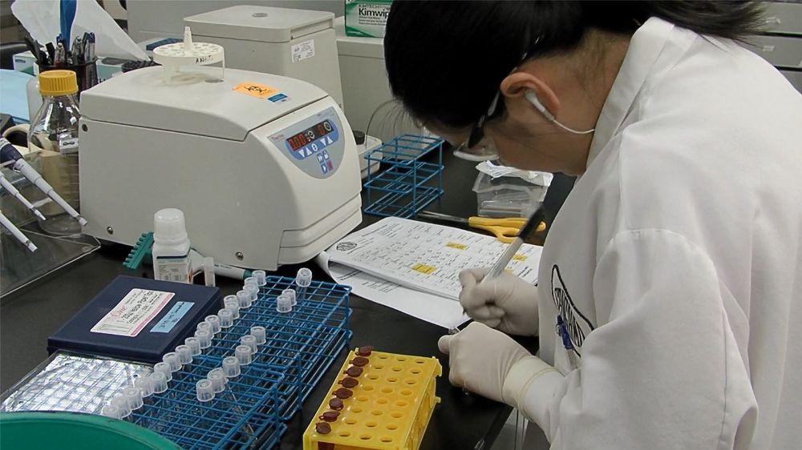

贺建奎想要让这些试验宝宝出生后获得对艾滋病毒的免疫力，因为她们的父亲是艾滋病毒携带者。那么他具体而言，在人类胚胎上做了什么编辑呢？这要牵涉到一个名为CCR5的基因。
在西欧部分人群中存在着罕见的CCR5基因突变，突变会令这个基因失活，而如果两条对应着的染色体上的两个CCR5基因都发生突变，那么个体便拥有了对大部分艾滋病毒毒株的天然免疫力。而贺建奎做的，就是敲除人类胚胎中的CCR5基因让它失活。
这听起来很合理，但问题在于：根据贺的前期试验结果，他并没能同时敲除CCR5的两个等位基因，因此CCR5基因并不会完全失活；而就算CCR5基因完全失活，也不保证就能够对艾滋病毒完全免疫。
而且，爸爸是艾滋病毒携带者这根本不是什么大事情，现在的医疗技术本来就有更简单、更安全的病毒阻断方法，孩子本来就可以拥有健康的人生，为什么要选择一个又危险、又不靠谱的方法？

(完成这次体内基因编辑的是美国生物技术公司Sangamo Therapeutics，主攻应用细胞和基因疗法来对抗血友病和其他遗传疾病/Sangamo Therapeutics)
尽管如今的基因编辑手段比起二十年前已经有了翻天覆地的变化，但即便是目前广泛研究、进展喜人的CRISPR/Cas9技术依然存在许多未知。
2015年《自然-医学》杂志刊登的一篇研究发现，有正常p53（一个著名的抑癌基因）功能的细胞，在经过CRISPR基因编辑后，细胞的正常生长会停止，这会使基因编辑变成一场无用功。而使用无P53活性的细胞进行基因编辑，又会使得细胞容易受到癌变。
另外，基因编辑依然不可避免地存在脱靶效应——即本来要编辑A基因，却张冠李戴到B基因，从而可能引起无法预知和不可控制的副作用。
对于别的样本（像体细胞、植物、小鼠），编辑错了还可以销毁，但是对于人类胚胎，只有等到发育到一定阶段才能观察到实验结果，如果出现问题就难以弥补了，但我们又不能眼睛一闭将失败的人类胚胎丢掉销毁了事。